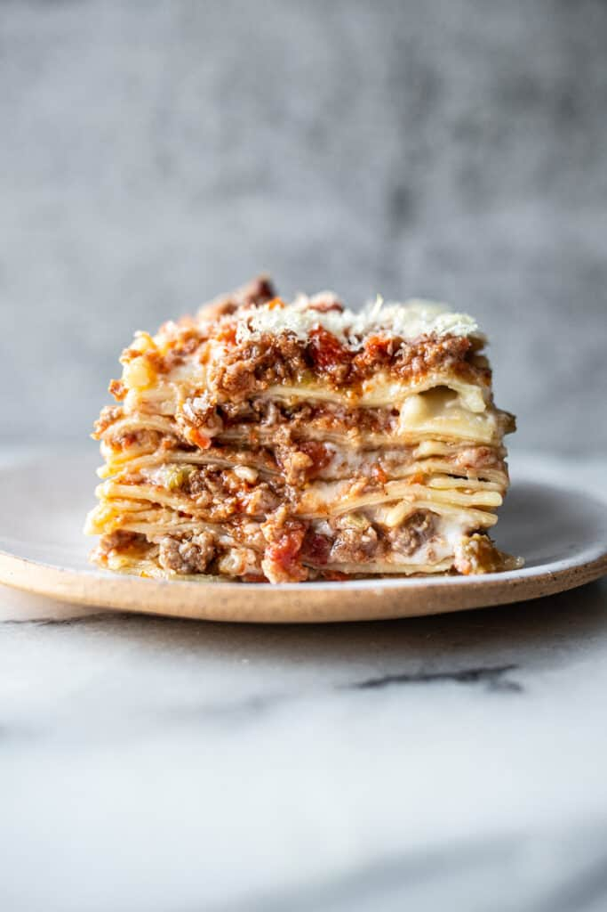

Lasagna

This lasagna Bolognese is extraordinarily delicious, can be made in stages, and is as authentic as lasagna gets!
Ingredients
Bolognese Sauce
1/2 cup extra virgin olive oil
1 medium onion, diced
4 ribs celery, diced
2 large carrots, peeled and diced
1 lb. 80/20 ground beef
1 lb. ground pork
2 cups cooking wine or chicken stock*
2 cups whole milk
1 32 oz. can whole, peeled san marzano tomatoes
2 bay leaves (optional)
1 parmigiano reggiano rind (optional)
kosher salt
Bechamel
1/2 cup unsalted butter
1/2 cup all purpose flour
4 cups whole milk, warmed
1 lb. uncooked lasagna pasta**
3 cups finely grated parmigiano reggiano, plus more for topping
1 Tablespoon unsalted butter
Instructions
- Bolognese Sauce, Heat a large dutch oven to medium heat. Add the olive oil and once warmed add the onion, celery, and carrots, and cook until soft and vegetables have begun to caramelize, about 10-20 minutes. Do not overcook or burn vegetables- if heat is too high adjust heat to medium-low or low.
- Crumble the ground beef and ground pork over the vegetables, stir to combine, and cook until the meat is cooked completely and no longer pink. Add the cooking wine or chicken stock and cook until evaporated, about 5-10 minutes. Add the whole milk and cook until also evaporated, another 5-10 minutes.
- Using an immersion blender, traditional blender or food processor, pulse tomatoes for a few seconds, until they are mostly blended, but small scant pieces are still intact. Add the tomatoes, bay leaves, and parm rind to vegetables and meat and stir to incorporate. Salt to taste. Cook for a minimum of 2 hours and up to 5 hours***, on the lowest possible simmer, uncovered, stirring every so often. Once complete, taste again and add additional salt if needed. Discard the parm rind and bay leaves. Set aside.
- Bechamel, Heat a medium-sized saucepan over medium heat and melt the butter. Whisk the flour into the butter and cook for 1-2 minutes. Slowly whisk in the warmed milk. Allow bechamel to thicken (about 5-10 minutes) until it is the consistency of gravy, whisking regularly. Add kosher salt to taste (a minimum of 1 teaspoon and up to 2 teaspoons) and set aside.
- Lasagna, Bring a large pot of water to a boil. Salt the water heavily and add lasagna, using tongs to keep each piece of pasta separated (this prevents sticking). Cook for 4 minutes, just until pasta has firmed slightly, and transfer lasagna to cookie sheets, separating layers with parchment paper so that lasagna does not stick together.
- Assembly and Baking, Preaheat the oven to 350° F. Spread 1 tablespoon of unsalted butter on the surface of a 9×13" baking dish, and spread 1/2 cup of the bechamel sauce on the bottom.
- Layer the lasagna until it forms a complete layer, allowing pieces of pasta to slightly overlap if necessary (this could be roughly three long pieces of pasta laid lengthwise or 4 shorter pieces laid widthwise). Second, spread approximately 3/4 cup of the bolognese sauce onto the pasta layer, using a spatula to spread until even. Next spread roughly 1/2 cup of the bechamel directly onto the bolognese sauce and spread. And finally top the bechamel layer with approximately 1/2 cup of finely grated parmigiano reggiano. Repeat this layering process (pasta, bolognese, bechamel, and parm) 6 times or until ingredients have been used.
- Once the top layer of pasta has been laid, place the remaining bechamel on top, then the remaining bolognese, and finally one last layer of Parmigiano Reggiano until all of the bolognese is covered with Parm (a little bit more than the other layers). Bake for 30-35 minutes uncovered, until the lasagna is warmed through completely and the cheese on the top is melted. Let sit for 5-10 minutes and serve warm.